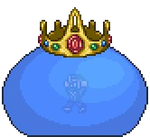
King Slime: The easiest boss in terraria.
Provides good loot like the slime gun
for you to progress to the next stage. [Optional]
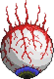
Eye of Cthulhu: The first *required* boss in terraria and the most iconic
one by far.
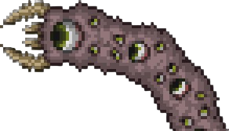
Eater of Worlds: If your world's evil
biome is Corrupted, it is your evil boss.
In expert mode, its special item is the
worm scarf.
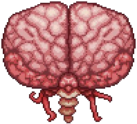
Brain of Cthulhu: If your world's evil
biome is Crimson, this is your evil boss.
In expert mode, its special item is the
Brain of Confusion
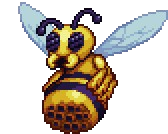
Queen Bee: A very well rounded boss in
the jungle and provides good loot to all
classes. [Optional]
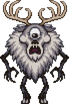
Deerclops: A boss located in the deep parts
of the tundra, provides interesting loot.
[Optional]
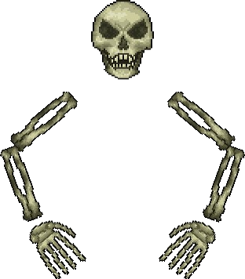
Skeletron: The dungeon keeper's cursed with Skeletron.
Fighting him unlocks the dungeon for you to explore.
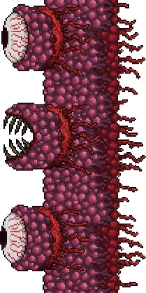
Wall of Flesh: The barrier separating you from entering hard mode.
Make sure to provide a long track for you to run on as you
fight it.
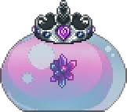
Queen Slime: An entry-level hard mode boss that provides really
good loot, such as armor, mounts, and more. [Optional]
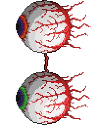
The Twins: One out of the three mechanical bosses, a direct upgrade from
the eye of Cthulhu. They're very evasive and it's hard to focus on both
of them at once.
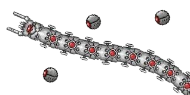
The Destroyer: One out of the three mechanical bosses, a direct upgrade from
the Eater of Worlds. It's very fast and tends to kill any NPCS near him,
be careful.
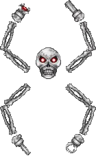
Skeletron Prime: One out of three mechanical bosses, a direct upgrade from Skeletron.
It has lots of extra defense when his arms are still alive, so target them first.
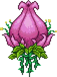
Plantera: She's summoned from breaking glowing pink plants in the underground jungle,
which only spawn after defeating all the mechanical bosses. She's pretty fast
for an underground boss! Be sure to make a pretty big arena when fighting her
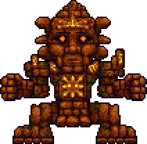
Golem: Defeating plantera gives you a temple key. Find the underground jungle temple
and dodge all of its traps and you get to fight the big golem. He has a lot of fancy moves
so make sure to be able to dodge them!
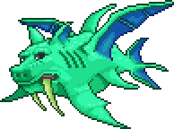
Duke Fishron: A hard-mode only boss summoned by fishing with a truffle worm. He seems
tough but technically, it is possible to kill him before the mechanical bosses, but it's very hard
to do so. [Optional]
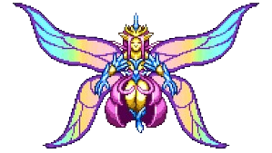
Empress of Light: The hardest boss in the game during the daytime. She spawns
as a butterfly in the night, in the hollow biome. She's a very hard boss to fight,
but summoning her in the daytime makes her a much bigger threat, but awards you
with the elusive Terraprisma. [Optional]
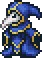
Lunatic Cultist: They spawn in the dungeon. Interrupting their ritual will
let you fight him, and defeating him summons the pillars, but also gives you the Ancient Manipulator, which
allows you to craft the most powerful terraria weapons.
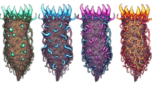
The pillars: Four pillars scattered across your world, each needing to kill
100 of it's unique enemies that it spawns, one pillar for each different class in
terraria. Each pillar drops it's own material, used for crafting the most powerful
armor and weapons in the whole game, (for their specified class).
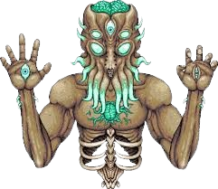
Moon Lord: Terraria's final boss. The big and scary one. He's super
powerful and able to one-shot you, so make sure your very prepared. Shoot his
three eyes, which will expose his heart to be able to defeat him. He drops the most
powerful loot in the game.